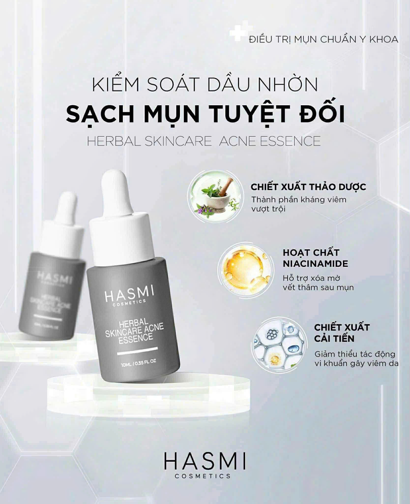

HASMI Herbal Skincare Acne Essence 10ml
Tinh chất thảo dược thấm sâu, hỗ trợ làm sạch nhân mụn, giảm viêm, mờ thâm và cân bằng dầu.
Lợi ích nổi bật
- Giảm viêm – làm dịu da, hỗ trợ gom cồi mụn nhanh.
- Niacinamide giúp mờ vết thâm sau mụn, cải thiện hàng rào bảo vệ.
- Kết cấu thấm nhanh, không bít tắc lỗ chân lông.
Cách sử dụng
- Sau bước làm sạch và cân bằng, chấm trực tiếp lên vùng mụn hoặc thoa mỏng toàn mặt.
- Sử dụng 1–2 lần/ngày. Ban ngày nhớ chống nắng đầy đủ.
- Kết hợp gel cấp ẩm để hạn chế khô bong.
Dung tích
10ml
Loại da
Da dầu, da mụn, da hỗn hợp
Kết cấu
Tinh chất thẩm thấu nhanh
Lưu ý: Kiểm tra kích ứng ở vùng nhỏ trước khi dùng toàn mặt.